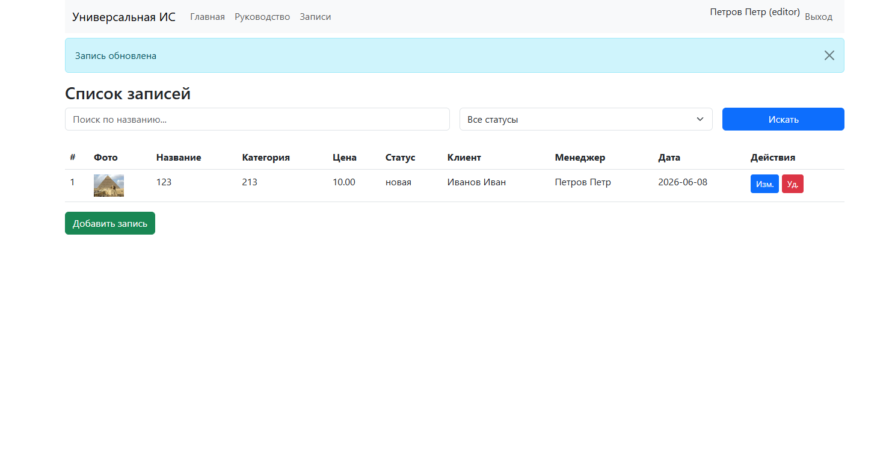

Руководство пользователя
Версия 1.0
1. Общие сведения
1.1 Назначение системы
Универсальная информационная система предназначена для управления записями (заявками). Поддерживаются две роли: Клиент и Менеджер. Клиент может просматривать только свои записи, а менеджер — все записи с возможностью добавления, редактирования и удаления.
1.2 Условия эксплуатации
- Веб-приложение работает в браузере (Chrome, Firefox последних версий).
- Требуется авторизация по email и паролю.
- Удалённые записи помечаются как удалённые, но физически остаются в базе данных (мягкое удаление).
- Для загрузки изображений необходимо стабильное интернет-соединение.
1.3 Авторизация и вход в систему
Для входа в систему:
- Перейдите на главную страницу приложения.
- Нажмите кнопку «Вход» в правом верхнем углу.
- Введите email и пароль, затем нажмите «Войти».

После успешного входа вы увидите сообщение «Добро пожаловать, ...» и в правом верхнем углу отобразится ваше имя и роль.

2. Функционал пользователя «Менеджер»
2.1 Назначение подсистемы
Менеджер имеет полный доступ ко всем записям: просмотр, добавление, изменение, удаление, поиск и фильтрация.
2.2 Описание операций
2.2.1 Просмотр всех записей
После входа в меню нажмите «Записи». Откроется таблица со всеми записями всех пользователей. В таблице отображаются: фото, название, категория, цена, статус (цветной бейдж), клиент, менеджер, дата.

2.2.2 Поиск и фильтрация
Над таблицей расположена форма поиска. Вы можете ввести часть названия в поле «Поиск по названию» и/или выбрать статус из выпадающего списка, затем нажать «Искать». Таблица обновится, показав только подходящие записи.

2.2.3 Добавление записи
- Нажмите кнопку «Добавить запись» под таблицей.
- Заполните поля: Название (обязательно), Категория, Описание, Цена, Дата, выберите Клиента и Менеджера из списков, установите Статус.
- При необходимости загрузите изображение, нажав кнопку «Выберите файл» в поле «Изображение».
- Нажмите «Сохранить».

После сохранения вы вернётесь к списку, где появится новая запись.
2.2.4 Редактирование записи
- В таблице нажмите кнопку «Изм.» (синяя иконка карандаша) рядом с нужной записью.
- Внесите изменения в любые поля. Можно заменить изображение, выбрав новый файл.
- Нажмите «Сохранить».
2.2.5 Удаление записи
- Нажмите кнопку «Уд.» (красная иконка корзины).
- Подтвердите действие в диалоговом окне.
- Запись будет помечена как удалённая и больше не отображается в списке, но останется в базе данных (можно восстановить при необходимости).
3. Функционал пользователя «Клиент»
3.1 Назначение подсистемы
Клиент может просматривать только свои собственные записи. Добавление, редактирование и удаление недоступны.
3.2 Описание операций
3.2.1 Просмотр своих записей
- Войдите в систему как клиент (email и пароль).
- Перейдите в раздел «Записи».
- Таблица отобразит только те записи, которые принадлежат вам. Доступен поиск и фильтр по статусу, как и у менеджера.

Кнопки «Добавить запись» и столбец «Действия» отсутствуют.
Примечание: скриншоты в данном руководстве могут отличаться в зависимости от темы оформления. Основные элементы интерфейса остаются неизменными.